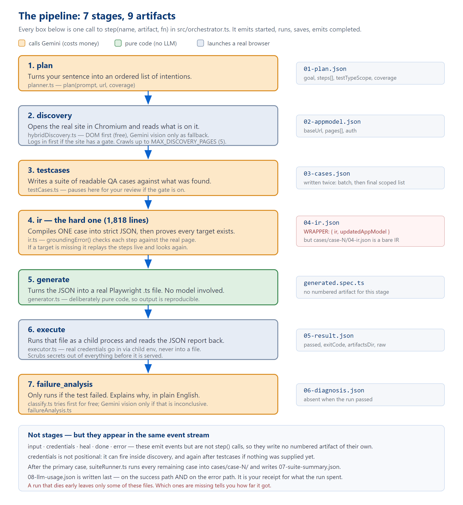
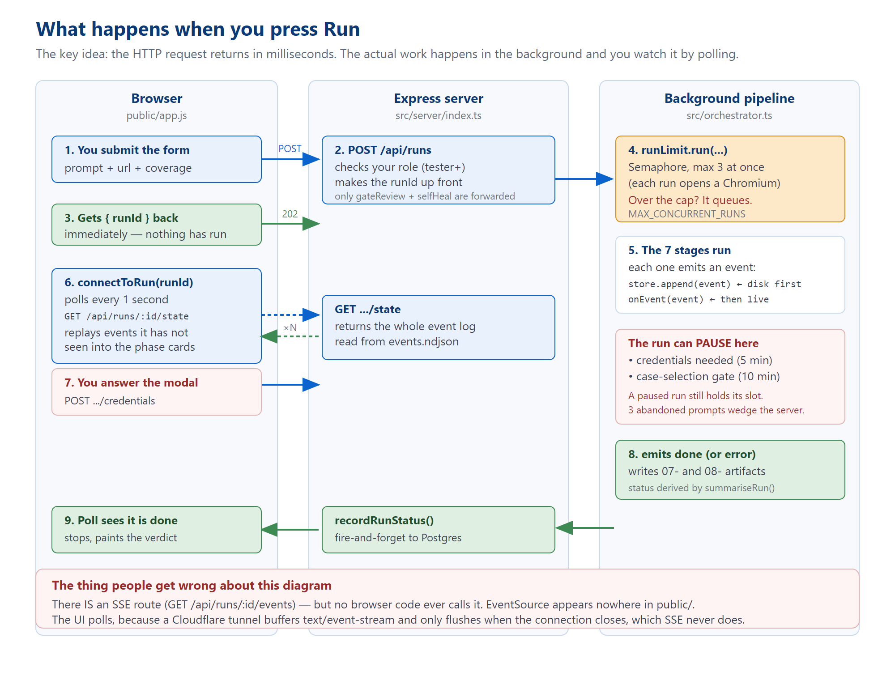
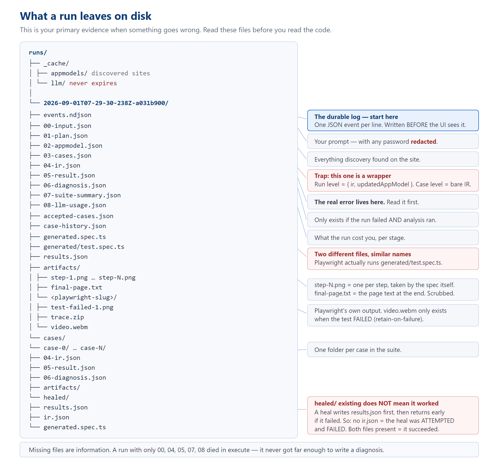
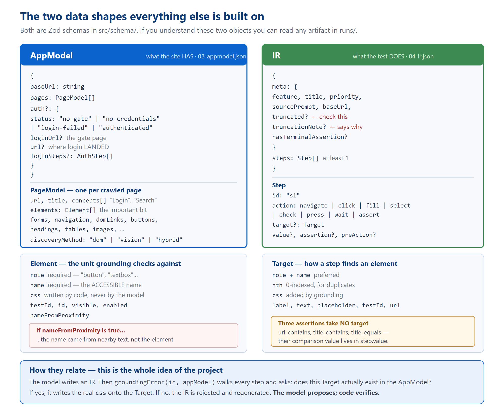

An engineer's guide to the AI Test Platform
ARCHITECTURE.md owns the file map and schemas, DECISIONS.md owns the reasoning behind design choices, TECH_DEBT.md owns the list of known defects. Where this guide and those disagree, they win, and the source code beats all of us.
[[TOC]]
You type a sentence and a web address. It gives you back Playwright tests that have already been run against that site.
That is the whole product in one line. The interesting part is everything that has to happen in between, because the naive version of this idea does not work.
The obvious approach is: give the page's HTML to a language model, ask it for a Playwright test, run whatever comes back. People build this in an afternoon and it looks like it works. Then you discover the failure mode.
The model writes a test that clicks a button called "Proceed to checkout". There is no such button. There is a "Continue to payment" button. The test fails, and you cannot tell whether the site is broken or the test was fiction. Multiply that by fifty test cases and the output is worthless — not because it is often wrong, but because you cannot tell which parts are wrong without checking every one by hand, which is the work you were trying to avoid.
So the platform does something more careful. Before it asks the model for anything, it opens the real site in a real browser and builds an inventory of what is actually on the page: every button, every field, every link, with its accessible name. Then, after the model produces a test, it checks every single step against that inventory. A step that points at something which does not exist is rejected and the model is asked again.
That check is called grounding, and it is the heart of the system. Volume 2 covers it in detail.
The platform does not hand you a .spec.ts file and wish you luck. It runs the test, captures screenshots of every step, records video when things fail, and — if the test failed — tries to explain why in plain English. Everything it did is written to disk where you can inspect it.
That evidence trail is the single most useful thing about this project when you are debugging. Volume 5 is built around it.
A run moves through seven stages. Each one takes what the previous stage produced, does one job, and writes its output to a numbered file on disk.

Figure 1 — the seven pipeline stages, what each produces, and which ones cost money. Source: runPipeline() in src/orchestrator.ts.
00- through 08-) but only seven stages. The remaining events — input, credentials, heal, done, error — appear in the same event stream but are not stages and write no numbered file of their own.
00, 04, 05, 07 and 08 with nothing in between.
| Stage | Does what | Lives in | Writes | Costs |
|---|---|---|---|---|
| plan | Turns your sentence into an ordered list of intentions. | stages/planner.ts | 01-plan.json | One Gemini call |
| discovery | Opens the real site and inventories what is on it. | stages/hybridDiscovery.ts | 02-appmodel.json | A browser; usually no model |
| testcases | Writes readable QA cases against what was found. | stages/testCases.ts | 03-cases.json | One Gemini call |
| ir | Compiles one case to strict JSON and proves every target exists. | stages/ir.ts | 04-ir.json | Up to 4 calls + browser |
| generate | Turns that JSON into a real Playwright file. | stages/generator.ts | generated.spec.ts | Nothing — pure code |
| execute | Runs the file and reads the report back. | stages/executor.ts | 05-result.json | A browser |
| failure_analysis | Explains a failure in plain English. Only runs on failure. | stages/failureAnalysis.ts | 06-diagnosis.json | Free check first, then maybe Gemini |
Stages 4 to 7 handle one case — the primary case, the one closest to what you asked for. Once that is done, suiteRunner.ts takes every other selected case and puts it through the same compile-generate-execute cycle, writing each into its own cases/case-N/ folder. That is where 07-suite-summary.json comes from.
cases.find(c => c.fromPrompt) first, and only falls back to the highest-priority case if nothing was flagged. That ordering is deliberate: a "critical"-priority SQL-injection case used to outrank the thing the user actually asked for.

Figure 2 — the request lifecycle. The HTTP request returns immediately; the work happens in the background.
The important idea: POST /api/runs does almost nothing. It checks your permissions, generates a run ID, kicks the pipeline off in the background, and returns 202 Accepted with that ID — all in milliseconds. The actual run takes minutes.
The browser then watches by polling GET /api/runs/:runId/state once a second and replaying any events it has not seen yet into the progress cards.
PROJECT_OVERVIEW.md says the UI opens a Server-Sent Events stream and falls back to polling. That is not true and has not been for some time. connectToRun() in public/app.js is a plain while loop with a 1-second setTimeout. The string EventSource does not appear anywhere in public/.
GET /api/runs/:runId/events) — nothing calls it. It was abandoned because a Cloudflare tunnel buffers text/event-stream responses and only flushes them when the connection closes, which a live stream never does.
Two things stop a run mid-flight and wait for a human:
ENABLE_CASE_SELECTION_GATE is on, the run stops after writing test cases and waits for you to pick which ones should run. Default wait: 10 minutes.MAX_CONCURRENT_RUNS (default 3) at once, because each run launches a Chromium instance. Three people starting runs, walking away, and leaving credential prompts unanswered will wedge the entire server for five minutes. This is why those timeouts exist and why you should not raise them without also raising the cap.
This section is the one to remember. When something breaks, the answer is almost always already written to disk.

Figure 3 — the anatomy of a run directory, with the traps marked.
04-ir.json has two different shapesruns/<id>/04-ir.json → { ir: {...}, updatedAppModel: {...} } ← a WRAPPER
runs/<id>/cases/case-0/04-ir.json → { meta: {...}, steps: [...] } ← a bare IR
Same filename, two shapes, depending on the folder. If you are writing a script that reads these, handle both — the codebase itself does, with parsed?.ir ?? parsed.
generated.spec.ts is not the file that ranruns/<id>/generated.spec.ts ← a readable copy, for you runs/<id>/generated/test.spec.ts ← the file Playwright ACTUALLY executed
They are written from the same string, so in practice they match — but if you are ever unsure which one is real, it is the second.
healed/ folder does not mean healing workedThe self-heal code runs the repaired test first and only writes its ir.json afterwards, if it passed. So:
healed/ containing ir.json → the heal succeeded.healed/ with results.json but no ir.json → the heal was attempted and failed.The absence of a file is information. Work backwards from the highest-numbered file present:
| Highest file present | What that tells you |
|---|---|
01-plan.json | Discovery failed. The site did not load, or blocked us. |
02-appmodel.json | Discovery worked but no test cases survived. Check concepts in the appmodel — an almost-empty model usually means we only ever saw a login page. |
03-cases.json | The IR would not compile. Some step pointed at something not on the page. Look for meta.truncationNote. |
05-result.json | The test ran. This is the normal case — and the real error text is inside this file. |
06-diagnosis.json | It failed and the platform has an opinion about why. Read explanation. |
05-result.json and find raw.suites[0].specs[0].tests[0].results[0].errors[0].message. That is the real Playwright error. The user interface does not show it to you — it shows a screenshot — so people routinely debug from a picture when the exact error was sitting in a file the whole time.
Nearly every file in runs/ is one of two objects. Learn these and the artifacts stop being opaque.

Figure 4 — AppModel (what the site has) and IR (what the test does). Both are Zod schemas in src/schema/.
pages[].elements[] — every interactive thing found, as a role plus a name.meta plus an array of steps. Each step has an action and usually a target.The relationship between them is the whole project: grounding walks every Target in the IR and asks whether a matching Element exists in the AppModel.
meta.truncated. If the compiler could not ground every step, it can ship the part it could prove and set this flag. A truncated test runs fewer steps than the case described — and may still report as passing. meta.truncationNote tells you where it gave up.
| Path | Size | What is in it | Volume |
|---|---|---|---|
src/orchestrator.ts | 437 lines | The master pipeline. Start here — it calls everything else in order. | 2 |
src/stages/ | 22 files 9,560 lines | The stages themselves, plus the machinery they use. | 2 |
src/schema/ | 3 files 727 lines | AppModel, IR, and the gate's wire format. The contracts. | 2 |
src/llm/ | 5 files 436 lines | The Gemini call, retry/backoff, API-key rotation, per-run spend cap. | 2 |
src/kb/ | 3 files 278 lines | The hand-written QA checklist and the two disk caches. | 2 |
src/server/ | 18 files 4,806 lines | Express, all 57 routes, authentication, permissions, the case library. | 3 |
src/db.ts | 350 lines | Supabase Postgres. Identity and the library — never run content. | 3 |
src/runStore.ts | 249 lines | The runs/ folder: the event log and the run summary. | 3 |
public/ | 5,349 lines | The entire front end. Plain JavaScript, no framework, no build step. | 4 |
tests/ | 51 files | Vitest unit tests. Not the generated Playwright tests. | 5 |
npm test) runs tests/** — the unit tests for the platform's own code. About 790 of them.playwright.config.ts) has its testDir pointed at runs/ — it runs the generated tests the pipeline produces for your site.
| Term | What it means here |
|---|---|
| AppModel | The inventory of a site produced by discovery: pages, and the interactive elements on them. |
| IR | "Intermediate Representation" — the compiled test as strict JSON, before it becomes Playwright code. |
| Grounding | Checking every step of an IR against the real AppModel, and attaching the real selector when it matches. The project's core safety mechanism. |
| Live extend | When grounding cannot find something, replaying the steps so far in a real browser, looking at wherever that lands, and adding it to the AppModel. This is how the system reaches pages discovery never crawled. |
| Case | One human-readable test scenario: title, steps in English, expected outcome. |
| Primary case | The one case that goes through the full pipeline first — normally the one matching what you asked for. |
| The gate | The optional pause after case generation where you pick which cases actually run. |
| Coverage | minimal / standard / full — how many cases to generate. |
| Scope | functional and/or security. Inferred from your wording, not chosen by the model. |
| Truncated | An IR where only some steps could be grounded. It ships the provable prefix and flags itself. |
| Blocked | The site stopped us — a bot check, a CAPTCHA, an OAuth wall. Not a test failure. |
| Self-heal | One bounded retry after a failure: re-look at the page, recompile, run once more. |
| Replay | Re-running a saved case from its stored IR. Uses no LLM calls at all. |
| Shadow mode | Writing to Postgres while still treating disk as the source of truth, and logging any disagreement. |
npm install # postinstall also runs: playwright install npm run serve # http://localhost:3000 npm test # vitest — the platform's own unit tests npx tsc --noEmit # must be clean before you call anything done
You need GEMINI_API_KEYS in a .env file. Everything else has a working default. Copy .env.example and read the comments in it — they are unusually good and explain why each limit exists, not just what it does.
npm run serve has no auto-reload. It runs tsx once. Editing anything in src/ does nothing at all until you stop the server and start it again. There is a documented incident in this repo where a fix was verified offline, then a live run still showed the old behaviour — because the server process was over an hour older than the edit. If a change appears to have no effect, check that first.
public/ needs a hard reload in the browser. Changing the URL hash is a same-document navigation and keeps the old JavaScript alive. Two false "the fix didn't work" reports have been traced to this.
| Volume | Read it when… |
|---|---|
| 2 — The Pipeline | …you need to change how tests are generated, or understand why an IR was rejected. The biggest volume, because it is the biggest part of the system. |
| 3 — Server & Data | …you are adding an API route, touching permissions, or wondering why someone cannot see a run. |
| 4 — Frontend | …you are changing the UI. Read the class-contract section before you touch any CSS. |
| 5 — Operations & Debugging | …something is broken right now. Start with the decision tree on the first page. |
And in the repository itself: CLAUDE.md is the shortest useful thing to read — it is capped at 200 lines and lists the sharp edges. TECH_DEBT.md is the honest list of what is currently broken, with a real run ID cited for nearly every entry.